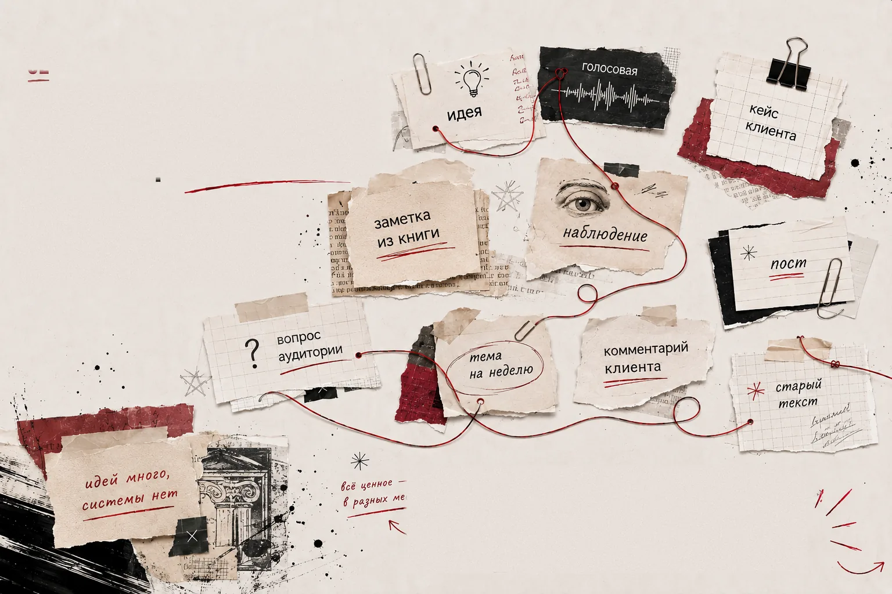
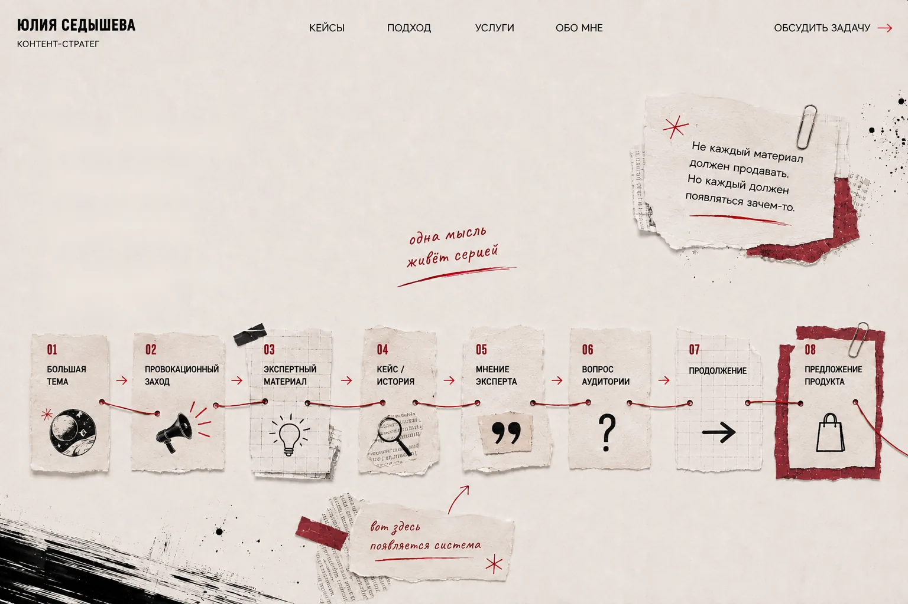
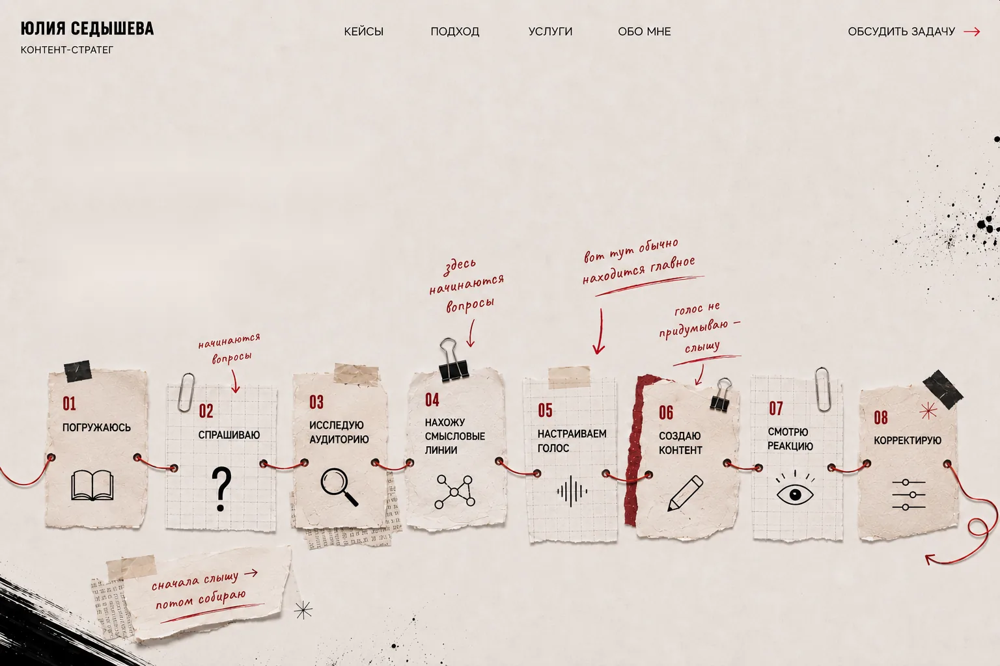
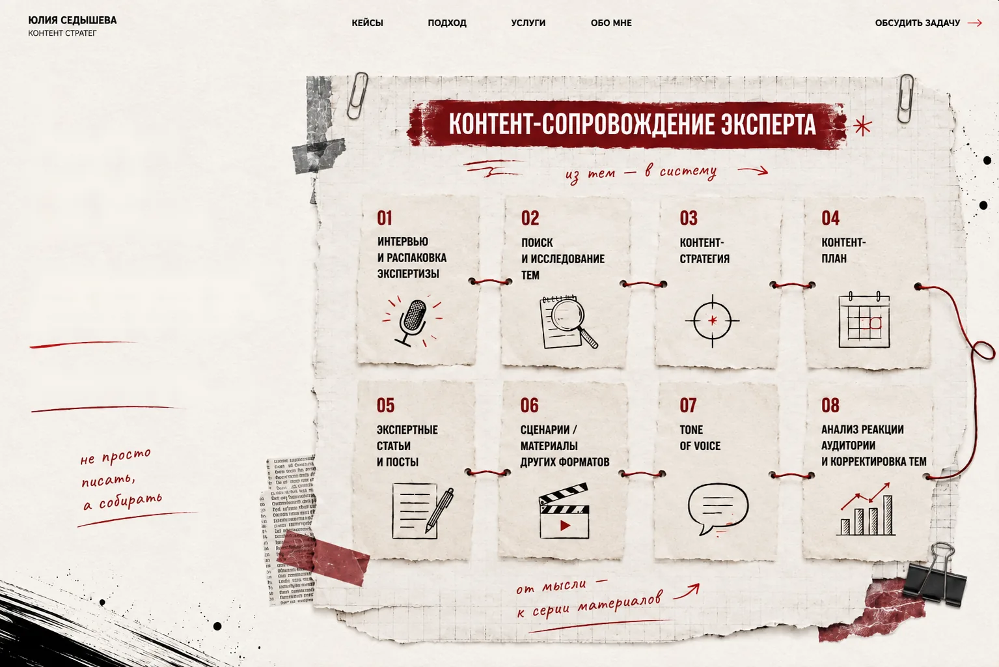
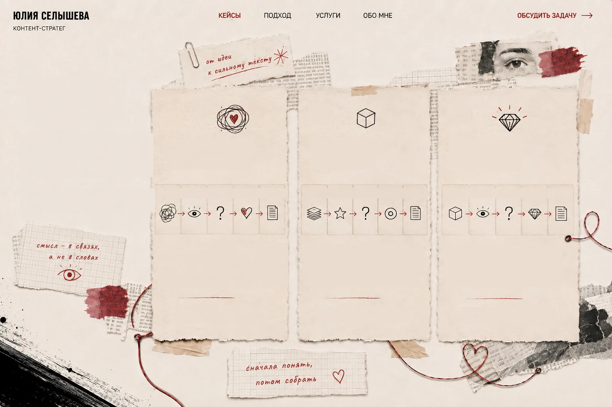
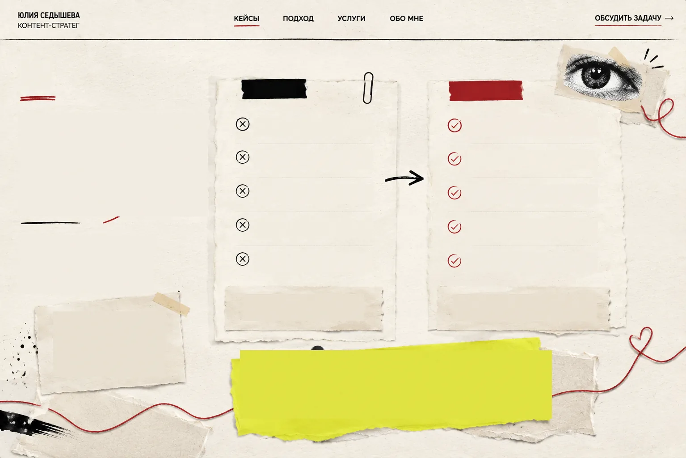

Психологическая
практика
Было · Увидела · Спросила · Нашла · Сделала
Превратила разрозненные идеи и заметки в систему смыслов и понятный текст, который помогает клиенту говорить о своей практике уверенно и по делу.

02У вас уже есть опыт, клиенты, обучение,
заметки, наблюдения и собственная позиция.
А потом наступает вторник — и снова
возникает вопрос: «О чём писать сегодня?»
Много хороших постов — ещё не контент-система.

03Один материал продолжает другой.
Так эксперт раскрывается постепенно,
а большая мысль не теряется
после одного поста.

04Мне не нужно научиться говорить вместо вас. Мне нужно научиться хорошо вас слышать.
Мне необязательно заранее разбираться
в вашей сфере. Мне должно быть интересно
в ней разобраться.

05Главная услуга — контент-сопровождение эксперта.
Внутри неё — темы, смыслы, структура
и сами материалы.
Это не набор разрозненных услуг. Это одна система работы с вашим контентом.

06Здесь не просто готовые тексты.
Показываю, как из материала рождается
смысл: что заметила, какое решение
нашла и почему выбрала именно его.
Важен не только результат,
но и ход мысли.
Превратила разрозненные идеи и заметки
в систему смыслов и понятный текст,
который помогает клиенту говорить
о своей практике уверенно и по делу.
ASPEX
Сложная экспертиза без сухого
B2B-языка. Собрала текст вокруг
состояния руководителя: хаос,
потеря ясности, потребность
в опоре.
Выделила суть продукта и ценность
для аудитории, создала текст, который
подчёркивает уровень и закрывает
ключевые возражения.
Здесь не просто готовые тексты. Показываю, как из материала рождается смысл: что заметила, какое решение нашла и почему выбрала именно его.
Важен не только результат, но и ход мысли.
Было · Увидела · Спросила · Нашла · Сделала
Превратила разрозненные идеи и заметки в систему смыслов и понятный текст, который помогает клиенту говорить о своей практике уверенно и по делу.
Было · Увидела · Спросила · Нашла · Сделала
ASPEX Сложная экспертиза без сухого B2B-языка. Собрала текст вокруг состояния руководителя: хаос, потеря ясности, потребность в опоре.
Было · Увидела · Спросила · Нашла · Сделала
Выделила суть продукта и ценность для аудитории, создала текст, который подчёркивает уровень и закрывает ключевые возражения.
Много опыта, методов, образования и клиентских историй, но всё это существовало отдельно и не складывалось в ясное представление о специалисте.
Главная ценность не в перечне техник. Сильнее работает отношение к человеку: бережность, внимание к его истории и честный подход без обещаний волшебной таблетки.
Разобрала опыт специалиста, запросы клиентов, сомнения перед консультацией, образование, методы и то, как сам эксперт говорит о своей работе.
Не продавать специалиста через количество дипломов.
Сначала показать человека и его подход, а уже потом подтверждать это опытом и квалификацией.
«Здесь важно не обещать быстрые ответы,
а дать человеку пространство, в котором
он сможет услышать себя.»
Получилась понятная структура, в которой человек сначала узнаёт свой запрос, затем понимает подход специалиста и только после этого видит методы, опыт и услуги.
Умение услышать эксперта и собрать его опыт в ясное позиционирование, не придумывая ему чужой голос.
Сильная экспертиза, данные и аналитика, но тексты звучали слишком рационально и отстранённо.
Проблема была не в нехватке фактов, а в том, что коммуникация почти не отражала состояние руководителя: усталость, тревогу, ощущение хаоса и потерю ясности.
Изучила сайт и соцсети ASPEX, тон коммуникации, визуальные и смысловые опоры бренда.
Выделила метафору маяка и ключевые ценности: ясность, структура, честность данных.
Не говорить напрямую о продукте.
Говорить о состоянии, в котором человеку начинает быть нужна структура.
«Цифр много, но смысла мало.
Отчёты есть, но решений нет.»
Заказчик получил экспертный контент без прямой продажи, но с чётким ценностным посылом.
Текст усиливает образ ASPEX как спокойной, структурной опоры для бизнеса.
Не просто написание текста, а работу со смыслом, позиционированием и голосом бренда.
Тестовое задание
Нужно было рассказать о кофемашине так, чтобы человек увидел не прибор, а качество утреннего ритуала.
Для аудитории важны не режимы сами по себе, а ощущение тишины, предсказуемости и вкуса без лотереи.
Изучила tone of voice бренда, продукт Magnifica Evo, боли аудитории и то, как вкус, тишина и стабильность собирают ощущение хорошего утра.
Говорить не о функциях напрямую.
Показывать, как точность, температура и мягкая автоматизация превращают кофе в ритуал.
«Точность и тишина, которые
формируют вкус и ритм утра.»
Получился премиальный текст, который раскрывает продукт через опыт человека: вкус, тишину, стабильность и ощущение собранного утра.
Не просто описание товара, а соединение маркетинга, tone of voice и продуктового смысла.

07Я не просто пишу тексты.
Я связываю темы, смыслы и цели,
чтобы контент работал на ваш проект
долго, последовательно
и с понятным результатом.
моя задача —
не писать за вас,
а настроить систему,
которая работает
на вас
Темы живут отдельно
и не складываются в общую картину.
Каждый пост начинается с нуля,
идеи приходится искать заново.
Экспертный голос скачет,
вас трудно запомнить.
Контент трудно продолжать,
нет ощущения направления.
Продажа появляется внезапно
и воспринимается как навязчивая.
Контент есть.
Но он не работает на систему.
Темы связаны между собой
и ведут аудиторию по понятному пути.
Одна мысль живёт серией —
её легко развивать.
Ваш голос узнаваем,
человеку хочется вас читать.
Каждый следующий материал
логично вытекает из предыдущего.
Предложение продукта появляется
вовремя и воспринимается естественно.
Контент работает.
Поддерживает, привлекает и продаёт.
Контент перестаёт быть обязанностью.
Он становится продолжением вашей работы.
Собираю ваши мысли, опыт
и задачи в систему контента.
Достаю темы, смыслы
и ваш настоящий голос.
Связываю темы
в понятную систему.
Пишу в вашем голосе
и под вашу задачу.
Смотрю на реакцию
и развиваю то,
что работает.
Есть задача, но пока непонятно, с чего начать?
Расскажите, что у вас уже есть. Посмотрим, чего не хватает
и что имеет смысл делать дальше.